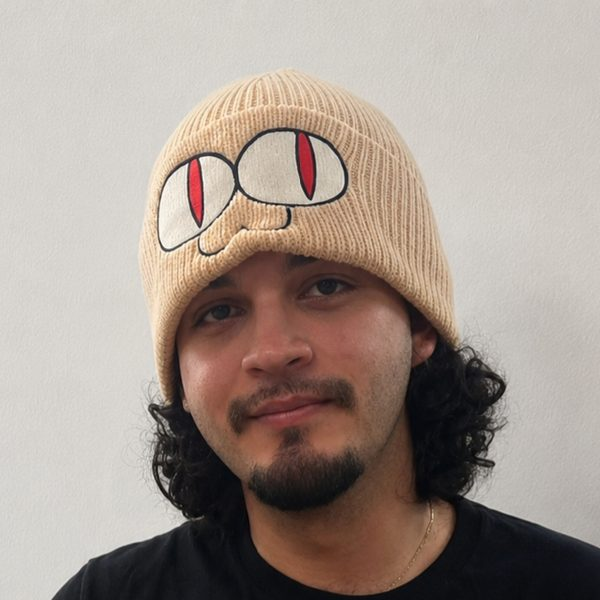

Julian
IT professional working in cybersecurity, project coordination and data analysis.

Tools I work with
Experience
Project Coordinator · MEDX Cybersecurity Project
Coordinate the installation and deployment of security cameras, network switches and servers, and help put cybersecurity and physical security measures in place across project sites.
IT Intern · MEDX
Programmed computers, installed and maintained software and hardware, and provided technical support.
IT Department · PUCPR
Helped users with computer issues, troubleshot and repaired hardware, built custom computers and kept servers running properly.
Education
Apr 2026 – Present
Aug 2020 – May 2025
May 2020 · 3.6 GPA · Team leader
Activities
Skills
Languages
Arena Companion
A companion web app for Flesh and Blood players, with a news feed from official and community sources, daily TCGplayer price tracking with charts, Living Legend standings, deck and rules tools, and a play mode for the table. Built in a dark storybook style.
Open the app →Hobbies
About
I'm Julian, an IT guy who works in cybersecurity. I also work as a project coordinator and data analyst, so my days move between keeping systems safe, keeping projects on track, and turning data into answers.
Fun fact: my dream pet is a raccoon. They're clever, they work the night shift, and they can get past almost any lock, so as a security guy I figure we'd have a lot to talk about.
Right now I'm focused on getting hands-on experience in the tech industry. I value real-world experience, so certifications will come after I've put the skills to work.